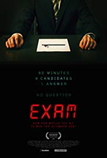
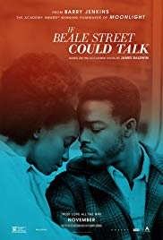
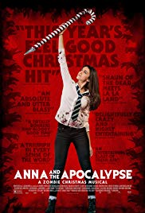
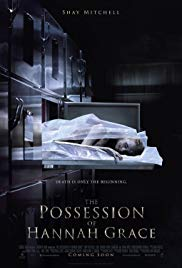

Genre:Mytery,Thriller
Release date: 17 June 2010 (Hong Kong)
Short description:Eight candidates for a highly desirable corporate job are locked together in an exam room and given a final test with just one question. It seems simple yet confusing that soon, tensions begin to unravel.Eight talented candidates have reached the final stage of selection to join the ranks of a mysterious and powerful corporation. Entering a windowless room, an Invigilator gives them eighty minutes to answer one simple question. He outlines three rules they must obey or be disqualified: don't talk to him or the armed guard by the door, don't spoil their papers and don't leave the room. He starts the clock and leaves. The candidates turn over their question papers, only to find they're completely blank. After the initial confusion has subsided, one frustrated candidate writes 'I believe I deserve...,' and is promptly ejected for spoiling. The remaining candidates soon figure out they're permitted to talk to each other, and they agree to cooperate in order to figure out the question: then they can compete to answer it. At first they suspect the question may be hidden in their papers like a security marker in a credit card, and they figure out ways to change their environment to expose ... Written by Stuart Hazeldine
Crime, Drama, Romance
Release date: 25 January 2019 (Spain)
Short description: A woman in Harlem desperately scrambles to prove her fiancé innocent of a crime while carrying their first child.Baldwin's novel "follows Tish, a newly engaged Harlem woman who races against the clock to prove her lover's innocence while carrying their first born child. It's a celebration of love told through the story of a young couple, their families, and their lives." Written by indiewire.Two years after sending shockwaves through the film world with "Moonlight," which went on to win Best Picture at the Academy Awards, Barry Jenkins is back with "If Beale Street Could Talk." Needless to say, the film is excellent and is everything one could hope a follow-up to "Moonlight" would be. The film follows a young African-American couple in Harlem before and during when the man is wrongfully accused of sexual assault. While such difficult subject matter could feel slightly tone-deaf to some in the era of #MeToo, viewers should rest assured that Jenkins handles the material with a delicate and incredibly thoughtful sense of sensitivity. Like "Moonlight," the film's aesthetic qualities feel almost lyrical in tone, which is a beautiful sight to behold. The score is also superb as well, managing to be both quietly rousing and emotionally stirring. Jenkins' technique of characterizing the setting or settings where his films are set is put to great use here. New York City feels almost like a character in this film, as it adds a rich tapestry to the film's narrative. This sense is heightened further when paired with a meticulous sound design, where even simple and day-to-day sounds like a subway car rolling into the station enhance the viewing experience. The acting is strong and quietly powerful from beginning to end, and the amount of thoughtful character development that Jenkins deploys throughout the story's narrative is commendable. The same can be said to the film's frequent use of narration. In many other films, this could have come off as annoying, but the film uses this tactic to great ends here by primarily using it to enhance the audience's emotional connection to the characters. Such a connection further builds up the powerful nature of the film's narrative, which makes a powerful and deeply tragic statement on the nature of racism without ever resorting to feeling heavy-handed by the end. I will note that the film does take some time to get going and has a few minor redundancies in its beginning scenes. But otherwise, this film is superb and on par with "Moonlight" in quality. Baldwin's prose is not just honored in this film, but it is cherished. 9/10
Comedy, Fantasy, Horror
Release date: 30 November 2018 (UK)
Short description: A zombie apocalypse threatens the sleepy town of Little Haven - at Christmas - forcing Anna and her friends to fight, slash and sing their way to survival, facing the undead in a desperate race to reach their loved ones. But they soon discover that no one is safe in this new world, and with civilization falling apart around them, the only people they can truly rely on are each other.When the zombie apocalypse hits the sleepy town of Little Haven - at Christmas - teenager Anna and her high school friends have to fight, sing and dance to survive, with the undead horde all around them. Teaming up with her best friend John, Anna has to fight her way through zombified snowmen, Santas, elves and Christmas shoppers to get across town to the high school, where they'll be safe. But they soon discover that being a teenager is just as difficult as staying alive, even at the end of the world.If you have been waiting some time for a horror-musical-teen-comedy-Christmas-movie, then it has to be said the wait is over. Anna and the Apocalypse boldly goes there. It centres on a group of teens who find themselves in the middle of a zombie apocalypse. Why is there a zombie apocalypse? Not important. But it is a good excuse for some serious genre mash-up action. I am not necessarily a natural audience for this kind of thing but I would say you would need to be being a bit overly harsh not coming away from this one with some positive feelings. It is a very likable film with some ambition to do something new.
Horror
Release date: 30 November 2018 (USA)
Short description:The Possession of Hannah Grace. The Possession of Hannah Grace is an upcoming American supernatural horror film directed by Diederik Van Rooijen. It stars Shay Mitchell, Kirby Johnson, Stana Katic, Grey Damon, and Nick Thune, and follows a former policewoman who encounters the supernatural while working in a morgue.When a cop who is just out of rehab takes the graveyard shift in a city hospital morgue, she faces a series of bizarre, violent events caused by an evil entity in one of the corpses.When a cop who is just out of rehab takes the graveyard shift in a city hospital morgue, she faces a series of bizarre, violent events caused by an evil entity in one of the corpses.On March 23, 2016, it was announced that Screen Gems hired Diederik Van Rooijen to direct horror thriller Cadaver from a script by Brian Sieve, which Todd Garner and Sean Robins would produce through Broken Road Productions. The film was originally entitled Cadaver.